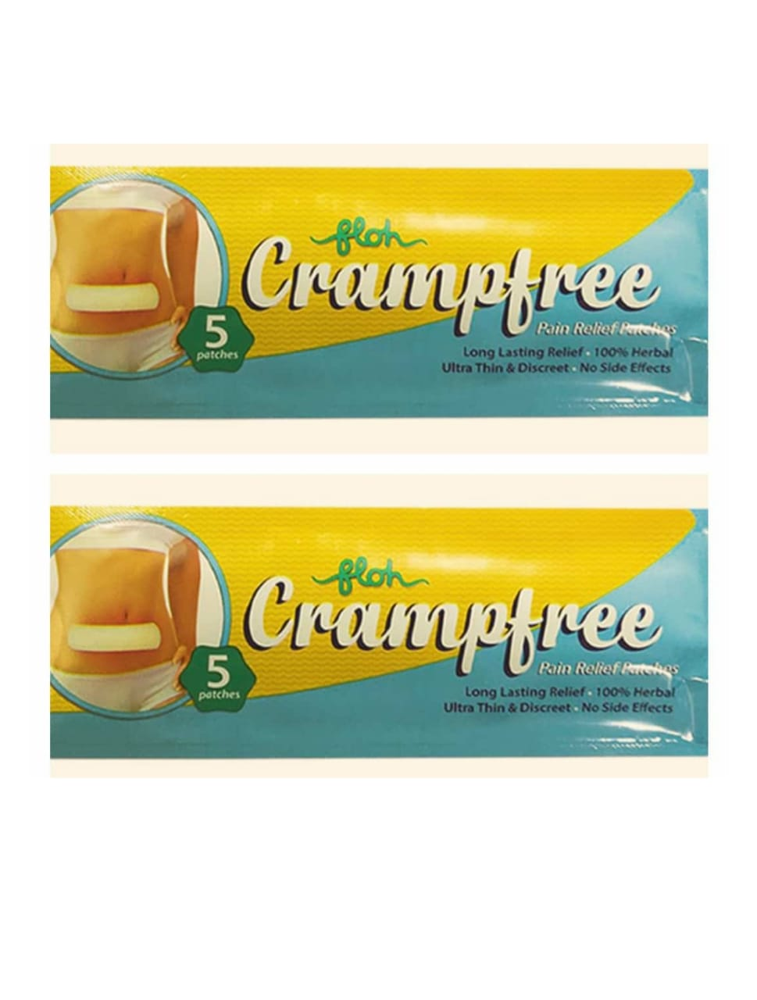

Cramfree

|
Description:
Floh Crampfree Pain Relief Patches for menstrual cramps are 100% herbal and non-greasy.
These patches promote blood circulation, relax and activate tendons giving instant relief from menstural cramp pain.
It provides discrete, continuous and non-messy period pain relief.
Key Benefits:
100% herbal pain relief patches to give relief in menstrual cramps
Healing benefits of satva pudhina, eucalyptus oil and kapoor provide instant relief
Has a non-messy and non-greasy texture that ensure that it is easily applied under clothing without staining
Sticks to your body uniformly
Does not have any side-effects
Direction for use:
1.Sticks to your body
2.Remove when you feel better
Storage instructions:
Read the label carefully before use
Do not exceed the use
Keep out of the reach of children
|